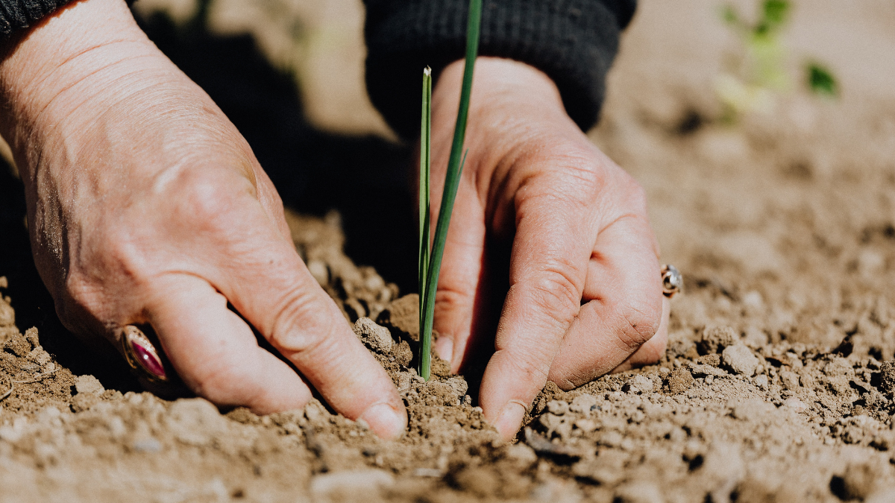
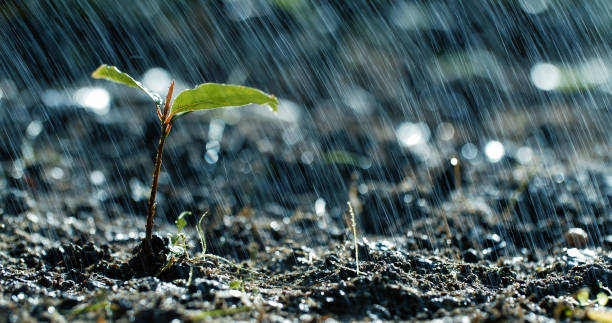

At BM Tech, we are dedicated to transforming agriculture through the power of technology, ensuring that farmers have access to the most advanced tools for optimal decision-making. Our Optimal Crop Selection Project is a pioneering initiative aimed at empowering farmers with AI-driven insights, data analytics, and real-time environmental monitoring to maximize agricultural productivity and sustainability.
In today's rapidly changing climate, traditional farming methods often fall short of meeting growing food demands and addressing environmental challenges. Our solution bridges the gap between conventional farming wisdom and modern scientific advancements, allowing farmers to make data-driven decisions about crop selection based on critical factors such as soil composition, weather patterns, nutrient levels, and past yield data.
Through our intelligent platform, farmers can analyze their land’s specific characteristics and receive precise crop recommendations tailored to their unique conditions. Our AI-powered algorithms take into account soil nutrients like nitrogen, phosphorus, and potassium levels, pH balance, moisture content, temperature, humidity, rainfall predictions, and climate conditions. This data-driven approach enables farmers to reduce resource wastage, enhance yield quality, and minimize risks, ultimately increasing profitability and sustainability.
Beyond improving yield efficiency, BM Tech is committed to promoting environmentally responsible farming by integrating precision agriculture techniques. By reducing excessive use of fertilizers and pesticides, our technology helps prevent soil degradation and water pollution. Additionally, it supports biodiversity and soil conservation by recommending sustainable crop rotations and smart farming solutions. By guiding farmers toward the most sustainable crops for their specific land conditions, we contribute to long-term agricultural resilience and food security.
We believe in making technology accessible and easy to use for farmers of all backgrounds. Whether they are small-scale farmers or large agricultural enterprises, our intuitive platform ensures that they can easily input data about their land and crops, receive AI-powered recommendations for optimal crop selection, and apply scientific insights to improve yield efficiency and reduce costs. With BM Tech, farmers no longer rely on guesswork—they gain scientific precision and predictive accuracy, allowing them to make smart, informed decisions that enhance productivity while preserving the natural environment.
At BM Tech, our mission is to empower farmers through AI-driven agriculture, improve food security, and drive innovation in sustainable farming. We envision a world where farming is no longer a struggle against unpredictable elements but a strategic, technology-assisted endeavor that leads to better yields, healthier crops, and a more resilient agricultural ecosystem. By integrating innovation, sustainability, and smart farming practices, BM Tech is paving the way for the future of agriculture—one where science and nature work together in harmony..

At BM Tech, we are revolutionizing agriculture by harnessing cutting-edge technology to enhance farming efficiency and sustainability. Our Optimal Crop Selection Project leverages artificial intelligence, big data analytics, and real-time environmental monitoring to provide farmers with actionable insights, enabling them to make data-driven decisions about crop cultivation. By integrating technology with traditional farming expertise, we empower agricultural communities to maximize yields, minimize resource wastage, and adapt to changing climate conditions.
Our platform is designed to assess key factors such as soil composition, nutrient levels, temperature, humidity, and rainfall patterns to determine the most suitable crops for cultivation. By utilizing advanced predictive models, we help farmers reduce the risks of crop failure, optimize land usage, and improve overall profitability. This approach not only enhances productivity but also contributes to sustainable farming practices, reducing the overuse of fertilizers and pesticides that can harm the environment.
Beyond crop selection, BM Tech is committed to making technology accessible to all farmers, whether they operate small family farms or large agricultural enterprises. Our user-friendly interface ensures that even those with limited technical expertise can benefit from AI-driven recommendations. Additionally, we are continuously innovating to incorporate satellite imagery, IoT-based soil sensors, and climate forecasting tools to further refine our recommendations and provide a holistic approach to modern farming.